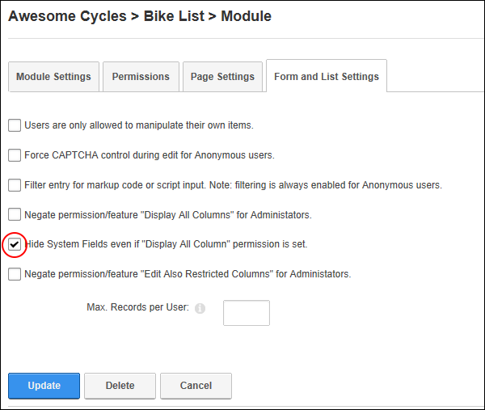

- Mark
 the check box to hide system fields. This is the default option.
the check box to hide system fields. This is the default option. - Unmark
 the check box to display system fields.
the check box to display system fields.
How to hide or display system fields even if "Display All Columns" permissions are set for a form or list created using the Forms and Lists module.

Hiding System Fields